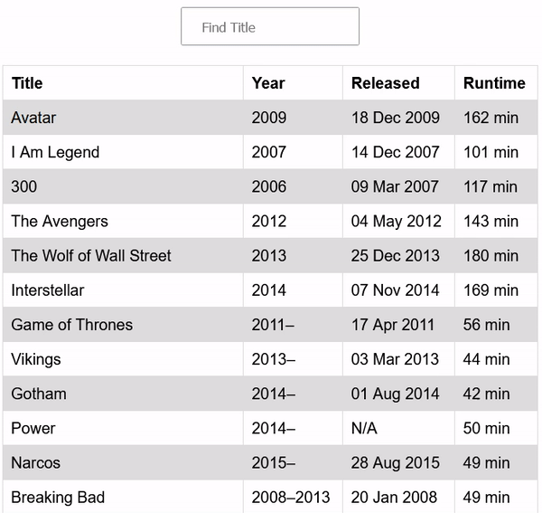

1. Tabela z filmami.
- API z filmami https://mati2762.github.io/test/movies.json
export interface Movie {
Title: string;
Year: string;
Released: string;
Runtime: string;
}
- Aplikacja powinna posiadać input do filtrowania filmów po tytule.
- Sprawdzamy czy szukana fraza zawiera się w tytule filmu.
- CSS według uznania.
Zasady:
- Można korzystać z internetu :)
- Pusty Angular Template https://stackblitz.com/fork/angular-ivy lub https://codesandbox.io/s/angular
